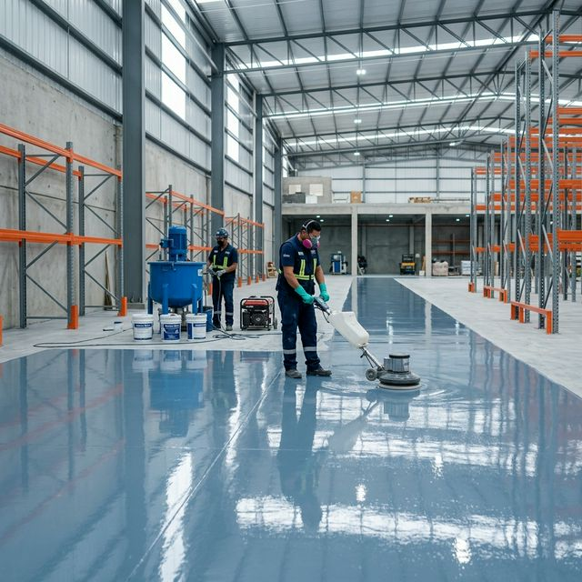
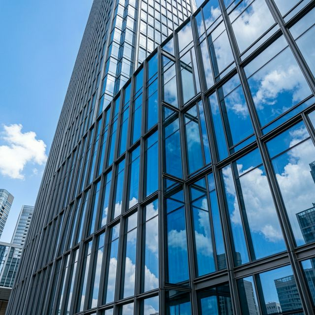

Hizmetlerimiz
Uzmanlaştığımız Alanlar
Yapıların en kritik noktalarında mühendislik çözümleri sunuyoruz.

Zemin Sistemleri
Endüstriyel Zemin Sistemleri
Fabrika, depo ve endüstriyel tesisler için yüksek dayanıklılıklı epoksi, poliüretan ve özel zemin kaplama çözümleri.
- Epoksi Kaplama
- Poliüretan Sistemler
- Endüstriyel Beton

Cephe Çözümleri
Dış Cephe Çözümleri
Modern yapılar için ısı yalıtımlı kompozit panel, giydirme cephe ve ventile cephe sistemleri.
- Giydirme Cephe
- Kompozit Panel
- Isı Yalıtım

Su Yalıtım
Su Yalıtım Sistemleri
Temel, çatı, teras ve ıslak hacim yalıtımında uzun ömürlü ve sızdırmaz çözümler.
- Temel Yalıtımı
- Çatı Yalıtımı
- Islak Hacim